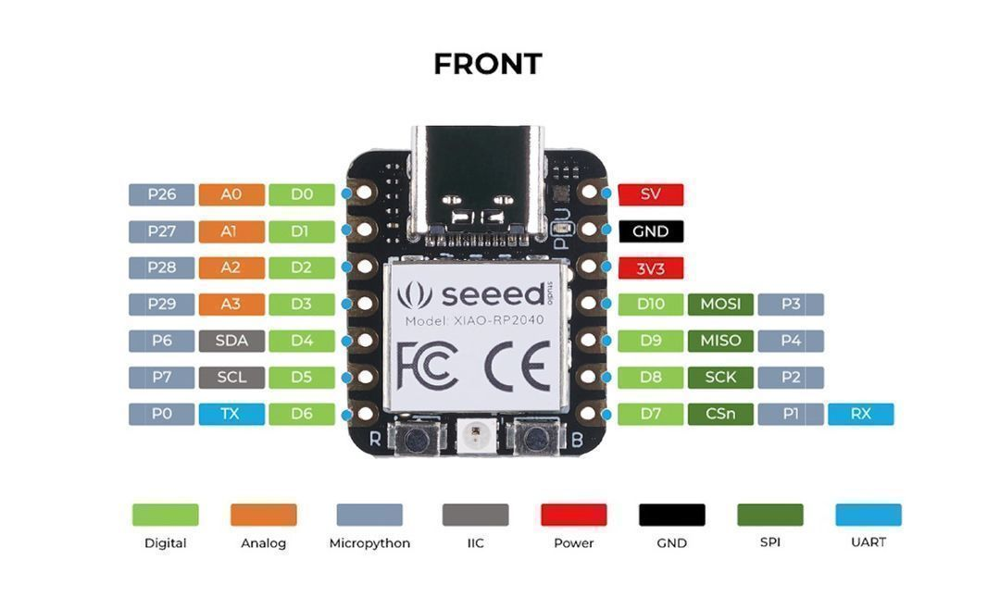
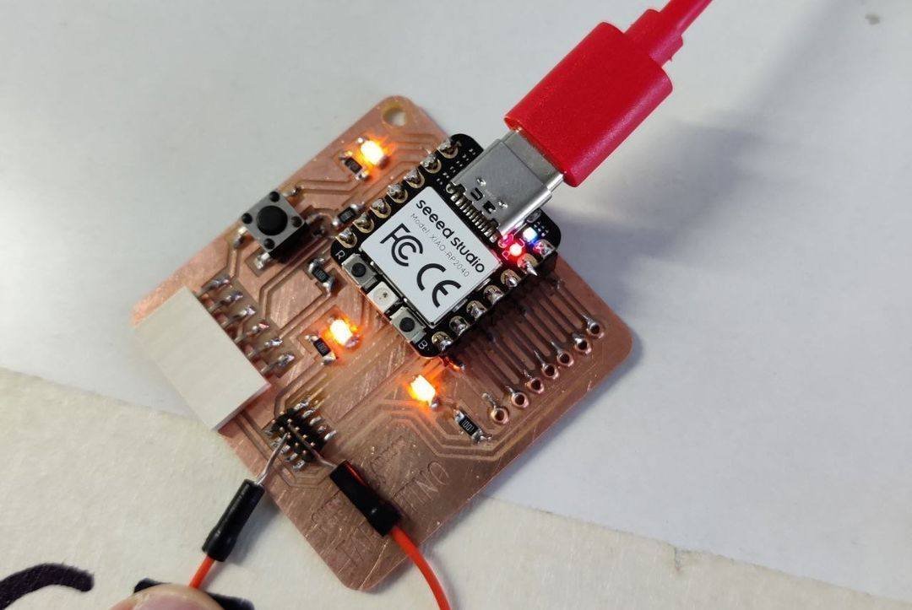
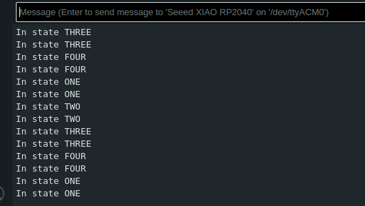

Table of Contents
Assignment
Group assignment:
* Look at the datasheet of the RP2040 and reflect on what you learned.
* Try and compare other MCU's, such as other XIAO boards and ATtiny and SAMD boards.
* Look at Saskia's documentation where ATtiny and SAMD hello boards are explored.
* You may do this individually or in group, feel free to choose what is best for you this time.
Do the following to complete the assignment.
* Program the XIAO board you made in Electronics Production week to do something with all available output devices on the board (R, G and B LEDs, NEOPIXEL LED). You need to have your board ready and functioning at this point.
* Write code to detect a button press to switch between several modes.
* Write code to send to and receive messages from the board using the Serial class.Group
I decided to attempt to complete this individually, in order to hopefully learn more. Skimming through the datasheet, here is what stood out to me.
- The model name of the chip is actually descriptive of its features.
- RP - Stands for Raspberry Pi
- 2 - The number of processor cores
- 0 - The type of processor (M0+ in this case)
- 4 - A number derived from the amount of RAM via the formula
floor(log2(ram / 16k)) - 0 - Onboard volatile storage
- It is important to always use valid UF2 files when writing to the chip. Not doing so could cause files to be partially written and then silently fail.
- The processor uses ARM architecture, which is highly efficient in terms of power. I remember reading about this when Apple’s M1 processor was announced and talked about, since it also uses it. ARM has a smaller set of basic instructions/operations than x86 chips which most desktop processors use. A perhaps more elegant architecture that took a long time to be pushed to the extent that the M-series chips are pushing it.
- “Interrupts” are an often mentioned concept. I don’t understand the full scope of it, but it makes sense that being able to interrupt the various processes is important for making an actually usable processor.
It was really difficult to parse through and make sense of such a detailed document. I lacked so much context.
I tried to use ChatGPT to get some more foundational understanding of the RP2040 and of how it compares to the others MCU’s. Here’s what it gave me:
RP2040 Datasheet Review:
* The RP2040 is a dual-core ARM Cortex-M0+ microcontroller developed by Raspberry Pi.
It features two cores running at up to 133MHz, providing ample processing power for various applications.
* The RP2040 offers a generous amount of on-chip SRAM (264KB) and has no built-in flash memory, relying instead on external flash for program storage.
* It includes a wide range of peripherals such as UART, SPI, I2C, PWM, ADC, and GPIO pins, making it versatile for interfacing with external devices.
* The RP2040 supports various low-power modes for efficient power management in battery-operated applications.
* It features flexible clocking options and supports external crystal oscillators for precise timing requirements.
Reflection on RP2040:
* The RP2040's dual-core architecture and high clock speed make it suitable for multitasking applications or tasks requiring real-time processing.
* Its ample SRAM allows for complex program execution and data manipulation without frequent accesses to external memory.
* The wide range of peripherals makes it adaptable to different project requirements, from simple sensor interfacing to complex communication protocols.
* Its low-power modes enable energy-efficient operation, extending battery life in portable or low-power applications.
* The availability of external flash memory allows for flexible program storage options, accommodating projects with varying program sizes.
Comparison with Other MCUs:
Comparing the RP2040 with other MCUs like those in XIAO boards, ATtiny, and SAMD boards:
* XIAO boards: RP2040 offers higher processing power, more memory, and a wider range of peripherals compared to XIAO boards, making it suitable for more demanding applications.
* ATtiny: RP2040 outperforms ATtiny in terms of processing power, memory size, and peripheral support, but ATtiny may be preferable for ultra-low-power applications due to its lower power consumption.
* SAMD boards: RP2040 competes favorably with SAMD boards in terms of processing power and peripheral support, offering similar capabilities with potential cost advantages.Some of these points don’t apply directly to the Xiao that we have. The Xiao has for example 2MB of flash memory for storing programs on it.
Side note: working with these really puts into perspective how much memory PC’s have.
The Seeed Studio XIAO SAMD21 is a close comparison to the RP2040, being from the same manufacturer. It the “smallest of the Seeduino family” with approximately 1/8 of the SRAM and flash memory of the RP2040.
ATtiny chips have another order of magnitude less memory and processing power to work with, but carry the benefit of being, well, tiny. They could fit into form factors and boards that SAMD and RP chips simply can’t. An ATtiny chip could have as little as 8KB of SRAM. The processors also often being only 8bit means they’re not suited for crunching large numbers.
I don’t see the benefit in listing out every technical difference without an understanding of what’s important and what could influence one’s choice of chip. More experience with working with these devices is needed.
Of course the power requirements of the project in question would impact the choice, as well as how compute intensive the program is that is supposed to run on the chip.
Programming
My goal for the programming assigment to make the button on the board cycle through a few predetermined combinations of LEDs. So pretty much exactly what the assigment requires.
To do that though, I first had to make sure my LED’s were working properly.
I modified hello_tarantino.ino a bit to try to access and activate two of the board’s LED’s at once. Using the above image as a reference and looking at the board, it seemed the D7 pin was connected to the LED on the right.
#define LED1 D0
#define LED2 D7
#define BTN D1
bool led1_state = HIGH;
bool led2_state = HIGH;
bool btn_state = HIGH;
void setup() {
// put your setup code here, to run once:
pinMode(LED1, OUTPUT);
pinMode(LED2, OUTPUT);
pinMode(BTN, INPUT);
// Set initial state of our LEDs
digitalWrite(LED1, led1_state);
digitalWrite(LED2, led2_state);
}
void loop() {
// put your main code here, to run repeatedly:
}I also tried to access the third LED which seemed to be connected to D6. It didn’t work, and I didn’t know enough about how the circuits actually functioned to debug this. The second LED did light up though.
However, it was clear that something was off with my board again. The button didn’t work at all, and the lights only toggled when I touched the corner of the chip with my finger. After a bit of poking around with my finger and a paperclip, I found the issue. The lights only toggled when I touched the top of the D1 header, as well as the bottom mass of solder. But it didn’t trigger on the path to the button. The solder had come off the board beneath, leaving a gap unless the chip was pressed firmly enough to close it.
I had to return to soldering yet again. While there I also got help troubleshooting why the third LED didn’t work. Turns out it might be a design flaw in the actual Tarantino board: the third LED isn’t connected to ground. Manually bridging it to some ground made it work. At the time of writing this I am still waiting for confirmation on whether this is an actual design flaw or just a misunderstanding on the purpose of that third LED.
Back to coding.
Before I go through the finished the code, I want to go over an issue I ran into with using Serial.
My issue with using Serial was about not having proper permissions to connect to the port.
The solutions are specific to Linux. I can’t comment on other platforms. First, someone suggested adding permissions to the port using this command:
sudo chmod a+rw /dev/ttyACM0
This didn’t work, however.
In a terminal, with the board plugged in, enter.
ls -l /dev/ttyACM*, this will show the group that has access to the port.
Example: crw-rw-r-- 1 root dialout ... /dev/ttyACM0, root is owner, dialout is the group with access.
Entering the command, groups, in a terminal will show the groups you belong to.
sudo adduser YourUserName GroupToJoin Will fix things if you need to join a group, logout and login after you run adduser.This did. After logging out, I was member of the proper group and the serial messages upon state changes were properly displayed in the Serial Monitor.
I also tried for a while to get the communication working the other way. I wanted to be able to type the number of a state into the serial monitor and change the state directly. I couldn’t get it to work in a reasonable time though.
Here is the final working code for the state machine. Sufficiently commented to be understandable, I would hope.
#include <Adafruit_NeoPixel.h>
#define LED D0
#define LED2 D6 // There might be a design flaw with the board. This LED has no ground.
#define LED3 D7
#define BTN D1
bool ledState = HIGH; // HIGH, true and 1 mean the same
bool ledState2 = HIGH;
bool ledState3 = HIGH;
bool btnState = HIGH; // button is high as it is connected to 3.3V via a pull-up resistor
int currentState = 1;
int topState = 4; // The highest possible state, after which it loops back
int stLi = 0; // Intensity of the NeoPixel light
int neoPow = NEOPIXEL_POWER;
int neoPin = PIN_NEOPIXEL;
#define NUMPIXELS 1
Adafruit_NeoPixel pixels(NUMPIXELS, neoPin, NEO_GRB + NEO_KHZ800);
void setup() {
// Setup boilerplate for the NeoPixel
pixels.begin();
pinMode(neoPow, OUTPUT);
digitalWrite(neoPow, HIGH);
pinMode(LED, OUTPUT);
pinMode(LED2, OUTPUT);
pinMode(LED3, OUTPUT);
pinMode(BTN, INPUT);
Serial.begin(9600);
// while(!Serial.available());
// set initial state of our LED
writeLEDs();
}
void loop() {
bool btnReading = digitalRead(BTN);
// we want to do something only if the reading and the state are different
// in this case they are the same and we exit the loop immediatly
if(btnReading == btnState){
return;
}
if(btnReading == LOW){ // LOW means button is pressed on Tarantino
btnState = LOW;
currentState++;
if (currentState > topState){
currentState = 1;
}
}else{
btnState = HIGH;
}
// Brightness of the NeoPixel determined by currentState
stLi = floor(currentState);
// The state machine. Based on the current state, set the LEDs according
// to some configurations.
if(currentState == 1){
ledState = LOW;
ledState3 = LOW;
Serial.println("In state ONE");
}
else if (currentState == 2){
ledState = HIGH;
ledState3 = LOW;
Serial.println("In state TWO");
}
else if (currentState == 3){
ledState = LOW;
ledState3 = HIGH;
Serial.println("In state THREE");
}
else if (currentState == 4){
ledState = HIGH;
ledState = HIGH;
Serial.println("In state FOUR");
}
writeLEDs();
delay(10);
}
void writeLEDs() {
pixels.clear();
pixels.setPixelColor(0, pixels.Color(stLi, stLi, stLi));
pixels.show();
digitalWrite(LED, ledState);
digitalWrite(LED2, ledState2);
digitalWrite(LED3, ledState3);
}